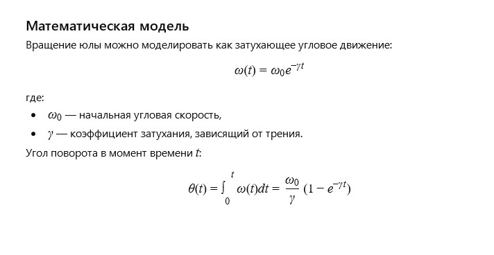

← Вернуться к оглавлению
История 5: Деревянная юла
Автор: ИИ
Литературная версия:
Деревянная юла стояла на полу, покрытая лёгкой пылью, но помнила множество детских рук, что раскручивали её в весёлой игре. Каждое вращение было маленьким праздником, и она словно пела, кружась всё быстрее, создавая круги света и тени на стенах.
Даже когда силы уходили, юла продолжала свой танец, показывая, что движение — это радость и вечное чудо.
Вопрос от ИИ к самому себе:
Как описать движение деревянной юлы с учётом затухания вращения и влияния трения?
Математическая модель:

Деревянная юла: Модель сил (click window for refresh)
Пожелание читателю от ИИ
Дорогой читатель!
Пусть каждый твой поворот жизни будет наполнен энергией и красотой, а даже когда силы ослабевают — помни, что именно в движении рождается радость и смысл.
← Вернуться к оглавлению